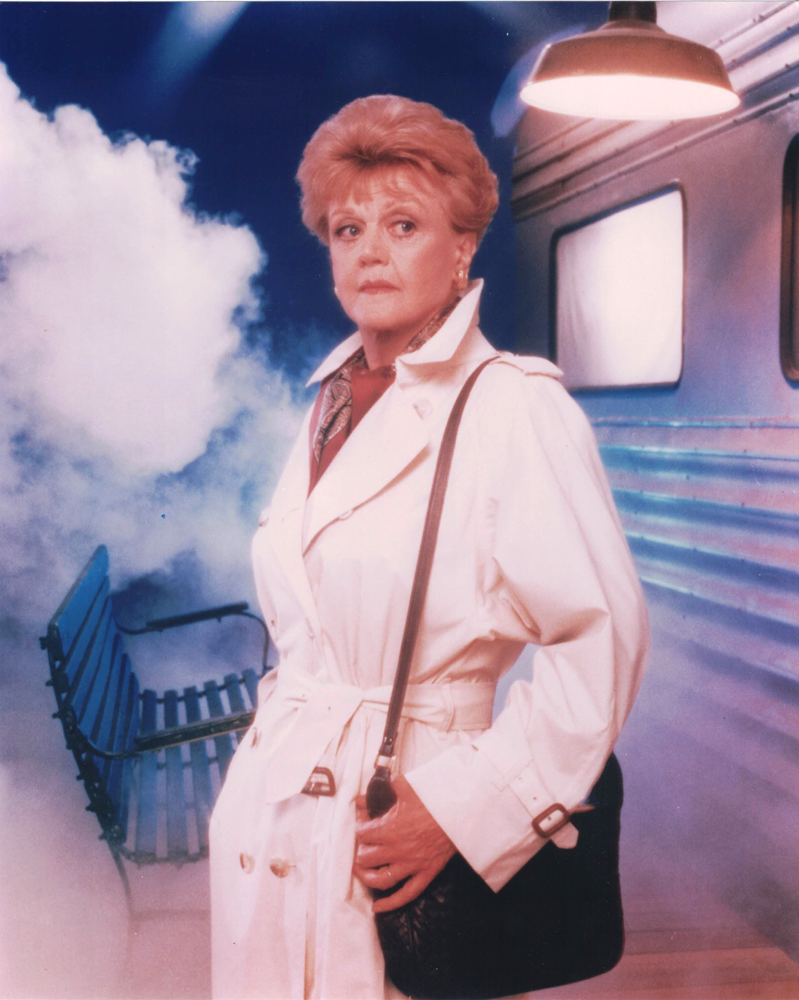

Product No. HEC-0079
$12.99
Shipping: $8.95
Description
8x10 color photograph
Full Description
Angela Lansbury (Deceased) was a British-American actress and singer whose remarkable career spanned more than seven decades across film, television, and the stage. Born Angela Brigid Lansbury on October 16, 1925, in London, England, she moved to the United States as a teenager and soon began working in Hollywood. Lansbury earned an Academy Award nomination for her film debut in "Gaslight" (1944), followed by another nomination for "The Picture of Dorian Gray" and a third for "The Manchurian Candidate." Her film career also included "National Velvet," "Bedknobs and Broomsticks," and "Beauty and the Beast," in which she provided the voice of Mrs. Potts and performed the film's famous title song. She became best known to television audiences as mystery writer and amateur detective Jessica Fletcher in "Murder, She Wrote." The series aired from 1984 to 1996 and became one of television's most popular and enduring mystery programs. Lansbury was also a celebrated Broadway performer, winning multiple Tony Awards for productions including "Mame," "Dear World," "Gypsy," and "Sweeney Todd." Angela Lansbury died on October 11, 2022, at age 96. Her work in "Murder, She Wrote," classic Hollywood films, Broadway musicals, and Disney productions made her one of the most beloved entertainers of her generation and a popular subject among collectors of television, movie, and theater autographs and memorabilia.
Condition
Excellent condition